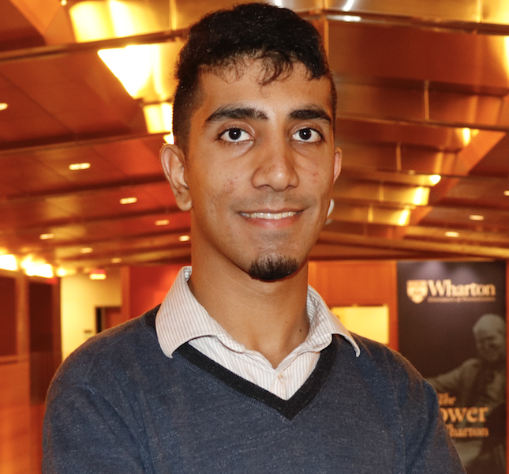

About Me
I am an undergraduate student at the University of Pennsylvania, with an expected graduation date of May 2022. Working towards a Bachelors of Science in Engineering (B.S.E.) in Computer and Information Sciences, as well as minors in Math, Statistics, and English.
In addition to my studies, I work at the university's PRECISE Center programming and researching tools to